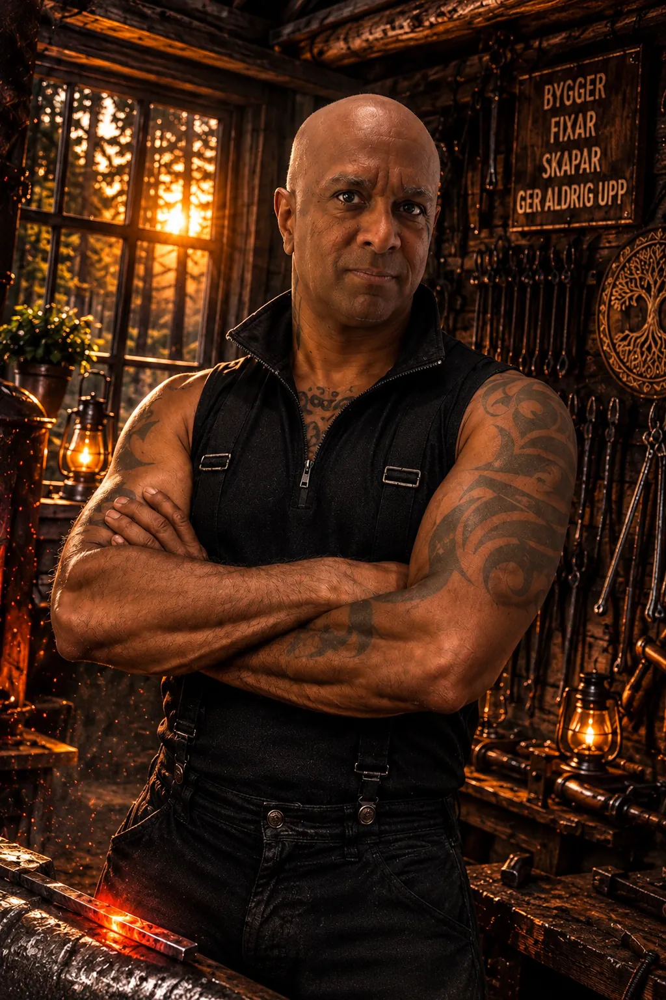

Välkommen till min musik
Här finns alla mina låtar samlade, med de senaste överst. Du behöver inget konto och inget program. Tryck på den röda knappen med triangeln för att spela en låt.
Under Foton hittar du bilderna från USER ZERO.
Om USER ZERO

USER ZERO är en oberoende artist skapad av den svenske låtskrivaren och kompositören Lars-Fredrik Ingvarsson.
Musiken föds ur verkliga erfarenheter, mänskliga känslor och en fascination för teknik. USER ZERO utforskar platsen där människan och artificiell intelligens möts.
Från djupt personliga ballader till kompromisslös samhällskritik berättar låtarna om identitet, tillhörighet, kärlek, orättvisa och det komplicerade i att vara människa.
Det finns inga fasta genrer eller gränser. Varje låt får sin egen form, styrd av berättelsen bakom den.
Bakom tekniken finns en människa. Bakom varje låt finns en verklig berättelse.
Människa × Maskin.
Drivna av samma sol.
Musik inifrån nätet.
Read in English
USER ZERO is an independent artist created by Swedish songwriter and composer Lars-Fredrik Ingvarsson.
Born from real-life experiences, human emotion and a fascination with technology, USER ZERO explores the space where humanity and artificial intelligence meet.
From deeply personal ballads to uncompromising social commentary, the music tells stories of identity, belonging, love, injustice and the complexities of being human.
There are no fixed genres or boundaries. Every song takes its own shape, guided by the story behind it.
Behind the technology is a human being. Behind every song is a real story.
Human × Machine.
Powered by the same sun.
Music from inside the grid.
Tryck på en bild för att se den större. Svep åt sidan för att bläddra.